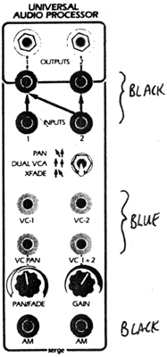
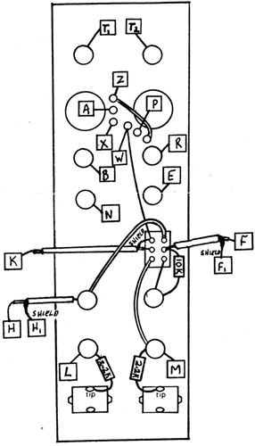

|

Universal Audio ProcessorParts for Kit
 Wiring of this module uses shielded wire for a few of the connections. The connections labelled H - H1 and F - F1 are a pair of adjacent pads on the VCA-1 PC Board. The shield is connected to the H1 pad and the F1 pad. Note that there are actually three K pads and any one may be used. The shield of the wires are connected on one end only. Keep leads short to avoid contact with other conductors. On the end which does not connect to the shield, trim the shield strands clear back to the insulation, then tug at the outer insulation to pull it over the strands to completely cover them, or wrap with a small piece of plastic electrical tape. Check out the operation of this module using a stereo monitor connected to its outputs (1=left, 2=right). Put the switch in the middle (DUAL VCA position). An audio input in to INPUT 1 will be controlled in level by the GAIN knob and a VC applied to the VC-1 jack. The PAN/FADE knob will control the balance of the two VCA sections, and should be set to a middle position. Check out section #2 the same way. Apply an audio signal to the AM inputs and note that the signal passing through the VCA's will be Amplitude Modulated. Switch the the PAN position, and apply an audio signal to INPUT #2 turn the GAIN knob up with no VC's applied, and note that,the signal will pan between the two outputs with the position of the PAN/FADE knob. Listen to Output #1 only, and apply two different audio signals to INPUT #1 and #2. With the GAIN knob all the way up, turning the PAN/FADE knob will fade the level of one up while fading the other down.
|